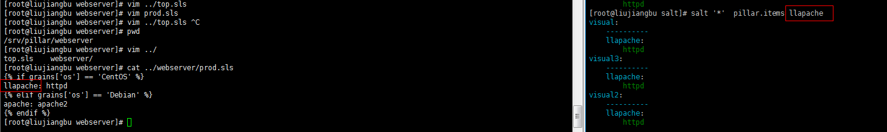

所有是ubuntu系统的minions都执行test.ping:
root@ubuntu:~# salt -G 'os:ubuntu' test.ping
ubuntu1:
True
返回操作系统多有信息：
root@ubuntu:~# salt ubuntu1 grains.items
ubuntu1:
biosreleasedate: 07/02/2015
biosversion: 6.00
cpu_flags: fpu vme de pse tsc msr pae mce cx8 apic sep mtrr pge mca cmov pat pse36 clflush dts mmx fxsr sse sse2 ss syscall nx pdpe1gb rdtscp lm constant_tsc arch_perfmon pebs bts nopl xtopology tsc_reliable nonstop_tsc aperfmperf eagerfpu pni pclmulqdq ssse3 fma cx16 pcid sse4_1 sse4_2 x2apic movbe popcnt tsc_deadline_timer aes xsave avx f16c rdrand hypervisor lahf_lm abm 3dnowprefetch epb fsgsbase tsc_adjust bmi1 hle avx2 smep bmi2 invpcid rtm rdseed adx smap xsaveopt dtherm ida arat pln pts hwp hwp_notify hwp_act_window hwp_epp
cpu_model: Intel(R) Core(TM) i5-6500 CPU @ 3.20GHz
cpuarch: x86_64
defaultencoding: None
defaultlanguage: None
domain:
fqdn: ubuntu1
fqdn_ip4:
fqdn_ip6:
gpus:
{'model': 'SVGA II Adapter', 'vendor': 'unknown'}
host: ubuntu1
id: ubuntu1
ip_interfaces: {'eth0': ['192.168.190.131'], 'docker0': ['172.17.0.1'], 'veth9fc8172': [], 'veth7bc5fce': [], 'lo': ['127.0.0.1'], 'veth15599ce': [], 'veth9d444c5': [], 'veth0717d88': [], 'vethee37c05': [], 'veth4ce75ba': [], 'docker_gwbridge': ['172.18.0.1'], 'veth695e94c': [], 'veth8cac166': [], 'veth1a0b0d5': [], 'vethdee3498': [], 'vethda3ae8e': []}
ipv4:
127.0.0.1
172.17.0.1
172.18.0.1
192.168.190.131
ipv6:
::1
fe80::182e:37ff:fe4e:faea
fe80::20c:29ff:fe29:ce4
....
命令合成：
root@ubuntu:~# salt -C 'G@os:ubuntu and webser* or E@db.*' test.ping
预定nodegroups允许在主配置文件中声明预定义的符合目标，这是一种符合表达式的简写形式：
nodegroups:
group1: 'L@foo.domain.com,bar.domain.com,baz.domain.com and bl*.domain.com'
group2: 'G@os:Debian and foo.domain.com'
group1: 'L@foo.domain.com,bar.domain.com,baz.domain.com and bl*.domain.com'
group2: 'G@os:Debian and foo.domain.com'
group3: 'G@os:Debian and N@group1'
vim /etc/salt/master,nodegroups行加入groupN,然后重启，执行命令为：
salt -N groupN test.ping
匹配所有minions:
root@ubuntu:~# salt '*' test.ping
ubuntu1:
True
minions id匹配：
salt '*.example.net' test.ping
salt '*.example.*' test.ping
salt '*.example.*' test.ping
匹配webN，例如（ (
web1.example.net, web2.example.net … webN.example.net)）：salt 'web?.example.net' test.ping
匹配web1到web5:
salt 'web[1-5]' test.ping
匹配web1和web3:
salt 'web[1,3]' test.ping
正则匹配：
匹配web1-prod和web-devel:
salt -E 'web1-(prod|devel)' test.ping
使用正则匹配state's top file，首先要指定要匹配的machers,如下：
base:
'web1-(prod|devel)':
- match: pcre
- webserver
'web1-(prod|devel)':
- match: pcre
- webserver
list：
salt -L 'web1,web2,web3' test.ping
cp.get_file:拷贝文件（安装包、目录）
[root@liujiangbu salt]# salt visual2 cp.get_file salt://apache/httpd.conf.tar.gz /usr/local/httpd.conf.tar.gz #这里要注意，要拷贝到目标机器的指定目录下，要指定包名字，最好一样，不然只写个目录路径会报错的！
visual2:
/usr/local/httpd.conf.tar.gz
批处理大小（Batch Size）：
salt '*' -b 10 test.ping #10个minions上运行test.ping命令
salt -G 'os:RedHat' --batch-size 25% apache.signal restart #25%的机器上执行apache重启
开启minion可以向master push文件，vim /etc/salt/master,找到file_recv 去掉注释将false改为true.
salt 'minion-id' cp.push /path/to/the/file
这样就从指定的minion上获取到了指定的文件
[root@liujiangbu home]# salt -G 'os:centos' grains.item ipv4
visual:
----------
ipv4:
- 127.0.0.1
- 192.168.220.130
匹配参数：
get_file
The cp.get_file function can be used on the minion to download a file from the master, the syntax looks like this:
# salt '*' cp.get_file salt://vimrc /etc/vimrc
get_dir
The cp.get_dir function can be used on the minion to download an entire directory from the master. The syntax is very similar to get_file:
# salt '*' cp.get_dir salt://etc/apache2 /etc
cp.get_dir supports template rendering and gzip compression arguments just like get_file:
# salt '*' cp.get_dir salt://etc/{{pillar.webserver}} /etc gzip=5 template=jinja
